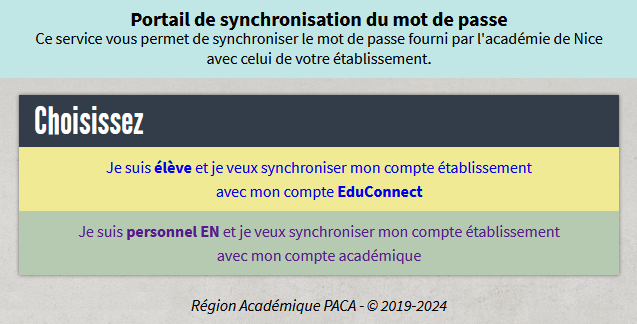

1
Ouvrir le portail
Rendez-vous à l'adresse suivante :
https://appli.ac-nice.fr/sync-mdp/
Une icône SyncMDP a été ajoutée sur le bureau de tous les ordinateurs pédagogiques du collège.
Cliquez dessus pour accéder à la plateforme de synchronisation.
